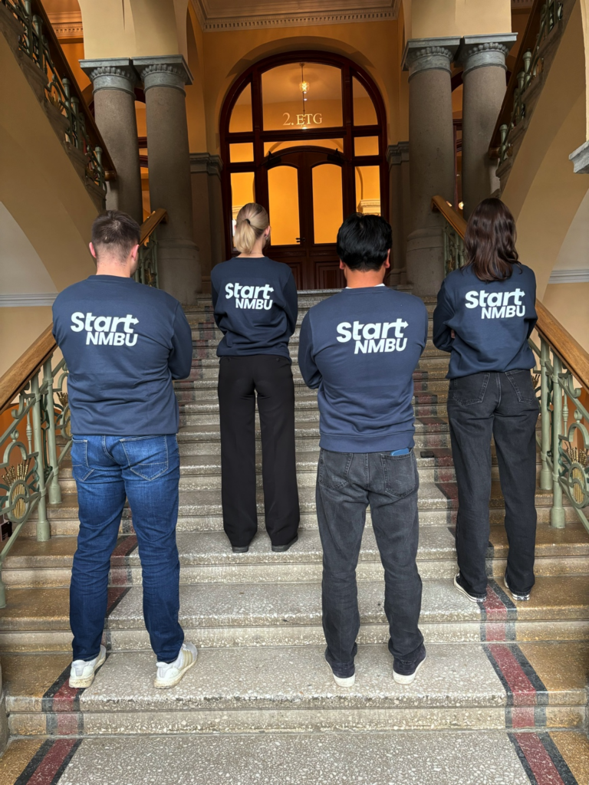
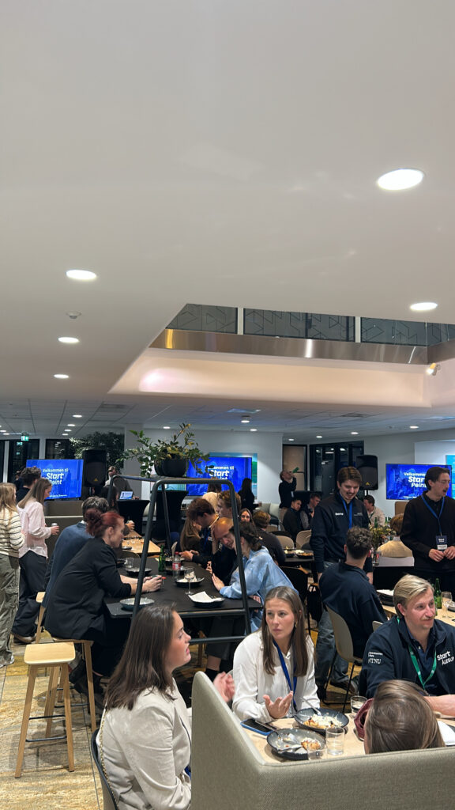
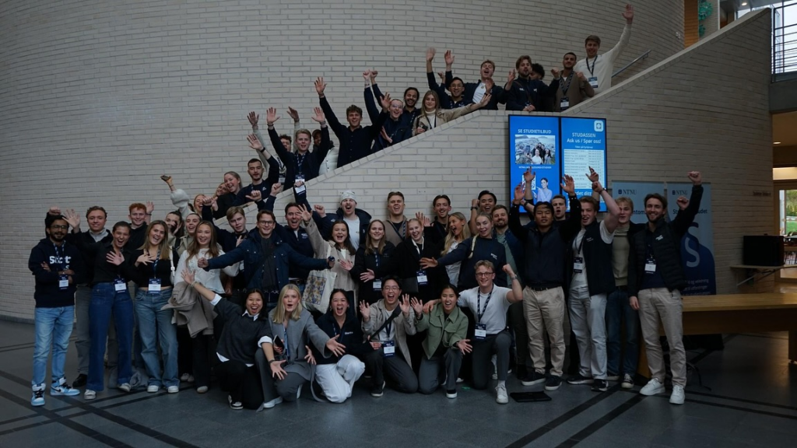
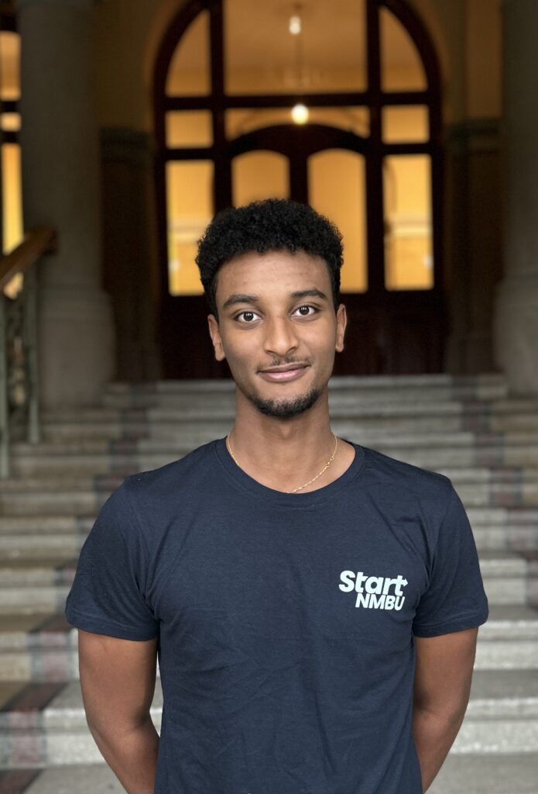

Start Create står bak Start NMBUs største arrangement, den årlige innovasjonscampen. Her møtes studenter, bedrifter og organisasjoner for å løse reelle utfordringer med kreative ideer.

Flere kvinnelige grundere og entrepenører
Kvinner er underrepresentert i oppstartsmiljøet, og Boost Henne ble skapt for å endre dette. Vi tror på at mangfold i gründermiljøet skaper bedre løsninger, sterkere team og et mer bærekraftig næringsliv.
Her får vi jobbe med reelle problemstillinger sammen med bedrifter og partnere, og skape et format som både utfordrer og engasjerer.
Det vi jobber med
- Planlegging og prosjektledelse av innovasjonscampen.
- Utvikling av caser i samarbeid med bedrifter.
- Logistikk, kommunikasjon og gjennomføring av arrangementet.
- Samarbeid med partnere som Orkla, Amesto og Statkraft.

Lær å lede et stort prosjekt
Her får du oppleve hvordan det er å lede et stort prosjekt fra start til slutt. Du lærer prosjektstyring, samarbeid med bedrifter og får førstehåndserfaring med innovasjon i praksis.
Perfekt for deg som liker å ta initiativ og se ideer bli til virkelighet.


Simon Hailu
Prosjektleder
create@startnmbu.no
Lurer du på noe?
Ta kontakt hvis du vil vite mer om innovasjonscampen, partnerskap eller hvordan det er å være med i Start Create.